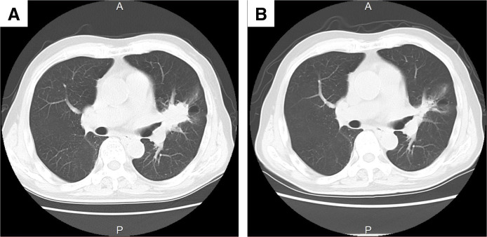
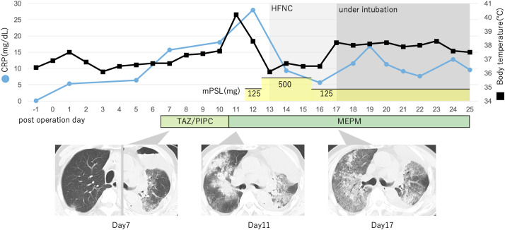
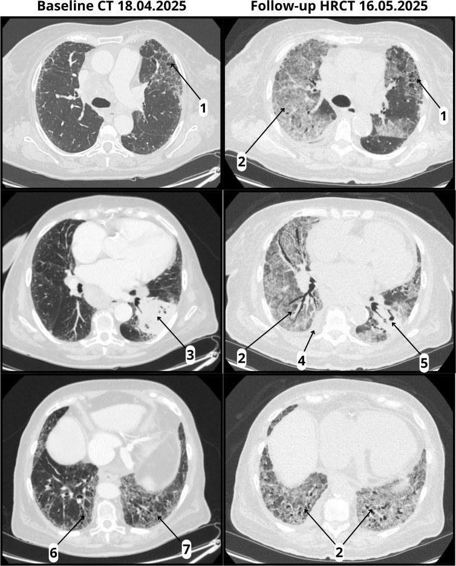

085 — Độc tính miễn dịch quanh mổ sau hóa–miễn dịch ung thư phổi / Perioperative immune-related toxicity after neoadjuvant chemo-immunotherapy in lung cancer
Tags: pattern:vien-phoi-mien-dich pattern:kinh-mo vung:phoi protocol:CT-nguc score:CTCAE score:Clavien-Dindo
Mức chắc chắn (certainty): tổng hợp y văn (literature synthesis) — 1 cohort đa trung tâm 130 bệnh nhân (Watanabe et al., JTO Clin Res Rep 2026, PMC12767704), 1 nghiên cứu thực tế 3211 bệnh nhân (Naidoo et al., Oncologist 2025, PMC12395253), 1 tổng quan scoping về chăm sóc quanh mổ (Codru & Vecerzan, Cancers 2026, PMC13510335), 2 ca nguyên văn dùng làm hình (PMC13044796, PMC12623183). Liều corticoid lấy từ khuyến cáo ASCO 2021 (ghi rõ nguồn khuyến cáo, không phải số liệu cohort); chỗ chưa kiểm chứng ghi "chưa rõ".
1. Tổng quan bệnh học – cơ chế hình ảnh
- Vì sao hóa–miễn dịch tân bổ trợ tạo ra một "cửa sổ nguy hiểm" quanh mổ: kháng thể ức chế PD-1/PD-L1 gỡ bỏ dung nạp ngoại vi → tế bào T tấn công mô lành: phổi (viêm phổi miễn dịch), tuyến giáp, thượng thận/tuyến yên, gan, ruột, cơ tim. Trong khi đó cuộc mổ lồng ngực thêm ba yếu tố: thông khí một phổi, xẹp phổi, và cơn bão cytokine do phẫu thuật — một phổi đang có viêm dưới lâm sàng có thể chuyển thành ARDS sau mổ.
- TẠI SAO hình ảnh là GGO (ground-glass opacity): viêm miễn dịch gây dày vách phế nang + dịch viêm trong khoang phế nang một phần. Trên CT, vùng phổi vẫn nhìn thấy mạch máu xuyên qua = GGO; khi dịch lấp kín phế nang thì mất mạch = đông đặc (consolidation). Đây là lý do cùng một bệnh có thể từ GGO khu trú → GGO lan tỏa → đông đặc + phế quản phế nang dãn (ARDS) tùy mức độ tổn thương.
- Ngưỡng định lượng phải nhớ (cửa 1 của Argon):
- irAE trước mổ 18,5% (24/130) ở bệnh nhân NSCLC giai đoạn IIA–IIIB dùng nivolumab + hóa trị platinum (Watanabe et al. 2026, 29 trung tâm Nhật Bản). Nhóm có irAE: hoàn thành đủ chu kỳ 58,3% vs 92,5% (p < 0,05), chỉ 78,3% (18/24) được mổ, R0 94,4%.
- Đáp ứng mô bệnh thấp hơn khi có irAE trước mổ: MPR 38,9% vs 63,1%, pCR 27,8% vs 36,8%. Biến chứng sau mổ và thời gian nằm viện không khác biệt giữa hai nhóm.
- Khoảng cách từ đợt cuối tới mổ: 66,5 ngày (42–140) ở nhóm có irAE vs 55 ngày (29–64) ở nhóm không có — khác biệt không có ý nghĩa thống kê, nhưng cho thấy irAE thường đẩy lùi lịch mổ.
- Yếu tố dự báo irAE trước mổ (phân tích thăm dò): u > 3,8 cm → OR 2,54 (1,02–6,33), p = 0,046; bạch cầu ái toan ≥ 2,0% cũng được xác định là yếu tố dự báo.
- irAE nặng ở NSCLC tiến xa (3211 bệnh nhân, Naidoo et al. 2025): 8,6% có irAE nặng; hay gặp tiêu chảy 3,5%, viêm phổi 1,4%, phát ban 1,3%; 57,4% phải nhập viện; 71,8% được dùng corticoid. Khi irAE nặng được xử trí đầu tiên bằng corticoid/ức chế miễn dịch, nguy cơ tử vong tăng 53% (22,3–91,4%) so với nhóm không có irAE nặng; nếu phải nhập viện/cấp cứu thì tăng 61% (37,9–87,9%) — đây là kết hợp, không phải nhân quả.
- Ca tử vong sau mổ (PMC13044796): nam 84 tuổi, 3 chu kỳ nivolumab + carboplatin + paclitaxel, cắt thùy trên trái + vét hạch trung thất. Hậu phẫu ban đầu bình thường; ngày hậu phẫu 7 (POD 7) xuất hiện CRP 15,73 mg/dL + GGO hai bên trên CT; dù dùng corticoid + kháng sinh, bệnh nhân tử vong POD 25, mô bệnh học tổn thương phế nang lan tỏa (DAD).
- Ca tử vong do CIP khởi phát sớm (PMC12623183): bệnh nhân có xơ phổi UIP nền, sau 1 liều pembrolizumab xuất hiện HRCT 22 ngày sau truyền: GGO lan tỏa hai bên + tràn dịch màng phổi + dịch màng tim trên nền honeycombing — hình ảnh AIP/ARDS; tử vong dù đã dùng corticoid liều cao + mycophenolate + infliximab.
- Vì sao "đáp ứng trên CT" không đồng nghĩa "hết u": CT đo kích thước, không đo tế bào sống. Sau hóa–miễn dịch, u có thể teo do xơ hóa/hoại tử mà vẫn còn u sống vi thể — vì vậy pCR chỉ xác định bằng mô bệnh học sau mổ; ngược lại u còn đậm độ trên CT có thể chỉ là xơ viêm.
2. Mẫu hình + chẩn đoán phân biệt theo vị trí (gamut)
Câu hỏi thực hành: bệnh nhân đã hóa–miễn dịch, vừa mổ phổi, nay khó thở / sốt / SpO₂ giảm — đó là CIP, viêm phổi vi khuẩn, xẹp phổi, phù phổi, thuyên tắc phổi, hít sặc, hay rò phế quản – màng phổi?
- Theo thời điểm:
- Trước mổ (trong chu kỳ tân bổ trợ): viêm phổi miễn dịch, viêm tuyến giáp, suy thượng thận, viêm gan — thường 4–12 tuần sau đợt truyền (khoảng thời gian điển hình của irAE; chưa rõ phân bố chính xác theo tuần cho riêng nhóm tân bổ trợ).
- POD 0–3: xẹp phổi, viêm phổi hít, phù phổi cấp, thuyên tắc phổi, TRALI, đau do vết mổ.
- POD 3–10: CIP khởi phát, ARDS, viêm phổi bệnh viện (xem 084).
- POD 10–30: CIP tiến triển, rò phế quản – màng phổi, mủ màng phổi, hẹp miệng nối phế quản.
- Theo mô hình trên CT:
- OP (organizing pneumonia): đám GGO/đông đặc vách hoặc dưới màng phổi, có thể di chuyển — thể hay gặp nhất của CIP.
- NSIP: GGO + dày vách liên tiểu thùy đối xứng hai đáy phổi.
- HP (hypersensitivity pneumonitis): GGO lan tỏa + nốt trung tâm tiểu thùy + bắt khí.
- AIP/ARDS: GGO lan tỏa + đông đặc + phế quản phế nang dãn, có thể kèm tràn dịch — tiên lượng xấu nhất (ca PMC12623183).
- Theo cơ quan (nhớ "PHỔI – GIÁP – THƯỢNG THẬN – GAN – RUỘT – TIM"): phổi; tuyến giáp (suy giáp/biến đổi TSH); thượng thận – tuyến yên (suy thượng thận, hạ Na⁺); gan (tăng transaminase); ruột (tiêu chảy/viêm đại tràng); tim (viêm cơ tim — hiếm nhưng chết người, có thể biểu hiện loạn nhịp/tụt HA sau mổ).
3. Bảng so sánh phân biệt (ma trận đối chiếu)
| Thực thể (entity) | Hình ảnh điển hình | Chốt vào (rule-in) | Chốt loại (rule-out) | Gợi ý xác nhận |
|---|---|---|---|---|
| CIP (viêm phổi miễn dịch) | GGO hai bên, đối xứng hoặc vái, dưới màng phổi/đáy phổi; có thể đông đặc, dày vách; không tôn trọng phân thùy | GGO hai bên mới xuất hiện sau ICI, cấy âm, không đáp ứng kháng sinh, có thể kèm irAE cơ quan khác | Đông đặc một thùy + sốt cao + đờm mủ + cấy dương → viêm phổi vi khuẩn | CT ngực lát mỏng; loại trừ nhiễm (cấy, procalcitonin); cân nhắc corticoid thử |
| Viêm phổi vi khuẩn sau mổ | Đông đặc một thùy/phân thùy, có phế quản hơi, có thể mức dịch | Sốt + đờm mủ + cấy dương + đáp ứng kháng sinh | GGO lan tỏa hai bên không khu trú → nghĩ CIP | Cấy đờm/máu, procalcitonin, kháng sinh theo kinh nghiệm |
| Xẹp phổi sau mổ | Đông đặc kèm mất thể tích: dồn rãnh liên thùy, trung thất lệch về phía tổn thương, cơ hoành nâng | Mất thể tích + trung thất lệch cùng bên | Trung thất lệch ra xa → tràn dịch/tràn khí, không phải xẹp | So phim trước mổ; nghiệm pháp hít sâu; nội soi hút |
| Phù phổi cấp tim | GGO hai đáy, quanh rốn, dày vách, tràn dịch hai bên, tim to | BNP tăng + đáp ứng lợi tiểu, GGO kiểu "cánh bướm" | GGO ngoại vi, không đối xứng rốn phổi, BNP bình thường → nghĩ CIP | Siêu âm tim, BNP, thử lợi tiểu |
| Thuyên tắc phổi | Không có GGO đặc hiệu; có thể nhồi máu hình nêm ngoại vi; CTPA là chốt | CTPA có huyết khối + D-dimer tăng + giãn thất phải | CTPA âm → loại PE, tìm nguyên nhân khác | CTPA (không dùng X-quang/CT thường để loại PE) |
| Viêm phổi hít | Đông đặc thùy dưới phải/trên phải (thùy phụ thuộc), có thể hang | Sặc rõ + đông đặc phân thùy phụ thuộc | GGO lan tỏa hai bên → CIP/phù phổi | Bệnh sử nuốt, VFSS/FEES khi cần (xem 081) |
| Rò phế quản – màng phổi / mủ màng phổi | Mức khí – dịch trong khoang màng phổi, dày màng phổi, khí trong mô mềm | Mức khí dịch + sốt sau mổ + khí ra ống dẫn lưu khi ho | Đông đặc phổi đơn thuần, không có mức khí | CT có cản quang, nội soi phế quản, cấy dịch màng phổi |
| Tái phát/tiến triển u | Khối/tổn thương tại chỗ cũ hoặc hạch to lại; có thể GGO quanh u (xẹp do tắc) | So sánh với CT ngay sau mổ + PET/CT | GGO lan tỏa hai bên không tương ứng vùng mổ → CIP | CT đối chiếu, PET/CT, sinh thiết khi còn chỉ định |

CT ngực cùng bệnh nhân trước (A) và sau (B) hóa–miễn dịch: khối teo nhưng không có GGO lan tỏa trước mổ — đây là kiểu "đáp ứng hình ảnh tốt" mà vẫn có thể còn u sống vi thể. Nguồn: Osako T et al., Surg Case Rep 2026, PMC13044796 Fig. 1, CC BY 4.0.Đọc CIP trên CT — ba câu hỏi theo thứ tự
- Phân bố: hai bên? đối xứng? đáy phổi/ngoại vi? → CIP thường hai bên, nhưng có thể một bên hoặc không đối xứng (ca PMC13044796 ngày 7 chỉ rõ ở phổi mổ).
- Mô hình: GGO thuần (sớm) → GGO + đông đặc (tiến triển) → phế quản phế nang dãn (ARDS, tiên lượng xấu).
- Nền phổi: có xơ/honeycombing không? Nếu có, GGO mới trên nền xơ là AIP/ARDS — nguy cơ tử vong cao (ca PMC12623183).
4. Protocol chụp + hệ phân độ/điểm chuẩn hóa
4.1. Trước mổ (preoperative)
- Khai thác irAE đầy đủ: cơ quan, độ CTCAE, thuốc đã dùng, đã về ≤ độ 1 chưa, còn corticoid không.
- Xét nghiệm nền: TSH + fT4 (tuyến giáp), Na⁺/K⁺, ** cortisol 8 giờ sáng** nếu mệt/tụt HA/tăng sắc tố (suy thượng thận), AST/ALT/bilirubin, creatinine.
- Đánh giá phổi: spirometry + DLCO (đặc biệt trước cắt phổi), CT ngực lát mỏng so với CT trước điều trị; tìm GGO mới trước khi gây mê.
- Nguyên tắc thời điểm: tiền sử dùng ICI đơn thuần KHÔNG phải lý do hoãn mổ — quyết định cá thể hóa (tổng quan scoping PMC13510335); nhưng đang có viêm phổi miễn dịch hoạt động độ ≥ 2 thì hoãn mổ chương trình cho tới khi kiểm soát. Ngưỡng "corticoid ≤ 10 mg prednisone/ngày" thường được dùng trong thực hành — chưa có RCT xác nhận, ghi "chưa rõ".
- Dự phòng suy thượng thận do stress: nếu có suy thượng thận đã biết, hydrocortisone liều stress trong và sau mổ (khuyến cáo chung; liều cụ thể theo phác đồ gây mê — chưa rõ liều tối ưu từ cohort này).
4.2. Sau mổ (postoperative)
- Theo dõi: SpO₂, nhịp thở, CRP nền – POD 1 – POD 3, công thức máu; CT ngực khi có khó thở mới, SpO₂ giảm, sốt không rõ nguồn, hoặc CRP tăng bất thường.
- Thứ tự loại trừ khi tụt oxy sau mổ: (1) xẹp phổi (so phim, hút, vật lý trị liệu), (2) thuyên tắc phổi (CTPA), (3) phù phổi (BNP, siêu âm tim), (4) nhiễm trùng (cấy, procalcitonin), (5) CIP khi các nguyên nhân trên không giải thích được.
- CIP — phân độ CTCAE v5.0 và xử trí: độ 1 không triệu chứng (theo dõi, ngừng ICI nếu còn chỉ định); độ 2 có triệu chứng, giới hạn hoạt động hàng ngày (ngừng ICI, prednisone 1 mg/kg/ngày); độ 3 giới hạn tự chăm sóc, cần oxy (methylprednisolone 1–2 mg/kg/ngày, nhập viện); độ 4 đe dọa tính mạng, cần đặt nội khí quản (methylprednisolone liều cao + infliximab 5 mg/kg hoặc mycophenolate nếu không đáp ứng sau 48 giờ). Liều corticoid là khuyến cáo ASCO 2021, không phải số liệu của cohort 130 bệnh nhân; giảm liều trong 4–6 tuần, không ngắt đột ngột.
- Suy thượng thận cấp: tụt HA không đáp ứng vận mạch + hạ Na⁺ → hydrocortisone 100 mg IV rồi duy trì, trước khi kết luận "sốc nhiễm khuẩn".
- Viêm cơ tim miễn dịch: loạn nhịp/troponin tăng/tụt HA sau mổ — ECG + troponin + siêu âm tim, hội chẩn tim mạch ngay.
flowchart TD
A[BN NSCLC da hoa mien dich, chuan bi mo] --> B{Co irAE truoc mo?}
B -->|Khong| C[Mo theo lich, CRP nen va CT khi co trieu chung]
B -->|Do 1| D[Co the mo, theo doi sat sau mo]
B -->|Do 2| E{irAE da kiem soat va corticoid da giam?}
E -->|Chua| F[Hoan mo, dieu tri irAE, danh gia lai sau 1 den 2 tuan]
E -->|Roi| G[Mo, du phong stress corticoid neu co suy thuong than]
B -->|Do 3 den 4| H[Hoan mo, methylprednisolon, hoi chan da chuyen khoa]
C --> I[Sau mo: kho tho, SpO2 giam, CRP tang]
D --> I
G --> I
I --> J[CT nguc va loai tru xep phoi, PE, phu phoi, nhiem trung]
J --> K{Khong giai thich duoc va GGO hai ben?}
K -->|Co| L[Nghi CIP: phan do CTCAE va corticoid]
K -->|Khong| M[Dieu tri theo nguyen nhan tim thay]
5. Biến thể bình thường và cạm bẫy
- Cạm bẫy 1 — "POD 7 GGO là viêm phổi bệnh viện". Ca PMC13044796: CRP 15,73 mg/dL, GGO hai bên, không đáp ứng kháng sinh; chẩn đoán đúng là CIP/DAD và bệnh nhân tử vong. Dấu hiệu gợi ý: GGO hai bên không tôn trọng phân thùy, cấy âm, không có đờm mủ.
- Cạm bẫy 2 — "không khó thở nên chưa phải CIP". Trong ca trên, POD 7 bệnh nhân còn không triệu chứng nhưng CT đã có GGO và CRP tăng; chờ tới khi khó thở là đã muộn. Với bệnh nhân đã hóa–miễn dịch, CRP tăng + CT mới đủ để hội chẩn.
- Cạm bẫy 3 — bỏ sót suy thượng thận vì "chỉ là tụt HA sau gây mê". Hạ Na⁺, tăng sắc tố, mệt kéo dài, tụt HA không đáp ứng vận mạch → thử hydrocortisone; đừng chờ cortisol 8 giờ nếu bệnh nhân đang sốc.
- Cạm bẫy 4 — hủy mổ chỉ vì "đã từng dùng ICI". Tổng quan scoping: tiền sử ICI không làm tăng tử vong sau mổ một cách nhất quán; hủy mổ oan làm mất cơ hội phẫu thuật triệt để. Ngược lại, mổ khi đang viêm phổi hoạt động là sai sót nguy hiểm — phân biệt "tiền sử" với "đang hoạt động".
- Cạm bẫy 5 — giảm corticoid quá nhanh. Bệnh nhân đáp ứng rồi tái phát sau khi giảm liều; cần giảm chậm 4–6 tuần và theo dõi CT/SpO₂ trong suốt thời gian giảm.
- Cạm bẫy 6 — quy kết mọi GGO sau mổ cho CIP. Xẹp phổi, phù phổi, hít sặc, nhiễm trùng đều phổ biến hơn CIP; điều trị CIP khi đang có nhiễm trùng sẽ che lấp nhiễm trùng. Luôn loại trừ theo thứ tự ở mục 4.2.
6. Tự lượng giá — Blind Quiz
Ca 1 — Nam 84 tuổi, cắt thùy trên trái sau 3 chu kỳ hóa–miễn dịch

- Bối cảnh: ung thư biểu mô vảy phổi trái giai đoạn IIB; 3 chu kỳ nivolumab + carboplatin + paclitaxel; cắt thùy trên trái + vét hạch. Hậu phẫu ban đầu bình thường.
- Câu hỏi: Đọc ba ảnh CT ở ngày 7, 11, 17: mô hình tổn thương thay đổi thế nào? Chẩn đoán? Vì sao kháng sinh không cải thiện?
Bấm để hiện đáp án (findings + chẩn đoán)
- Ngày 7: GGO/đông đặc khu trú phổi trái (bên mổ), CRP 15,73 mg/dL, bệnh nhân chưa khó thở.
- Ngày 11: tổn thương lan hai bên, đông đặc tăng, cần HFNC.
- Ngày 17: ARDS — GGO lan tỏa + đông đặc + phế quản phế nang dãn, phải đặt nội khí quản; tử vong POD 25.
- Chẩn đoán: viêm phổi miễn dịch (CIP) tiến triển thành DAD/ARDS sau hóa–miễn dịch; mô bệnh DAD.
- Vì sao kháng sinh không cải thiện: tổn thương do tế bào T, không phải vi khuẩn — cần corticoid liều cao (ca này dùng methylprednisolone 125 → 500 → 125 mg) ± ức chế miễn dịch; kháng sinh chỉ để dự phòng/điều trị bội nhiễm.
- Phản biện: ca tử vong dù đã dùng corticoid liều cao — CIP nặng có thể không hồi phục; bài học là nhận diện sớm ở giai đoạn GGO còn khu trú.
- Nguồn: Osako T et al., Surg Case Rep 2026, PMC13044796, Fig. 2, CC BY 4.0.
Ca 2 — Bệnh nhân xơ phổi nền, 22 ngày sau 1 liều pembrolizumab

- Bối cảnh: bệnh nhân ung thư phổi có xơ phổi UIP/honeycombing nền; sau 1 liều pembrolizumab xuất hiện khó thở tăng nhanh.
- Câu hỏi: So sánh hai cột ảnh. Mô hình tổn thương mới là gì? Vì sao tiên lượng khác CIP trên phổi lành?
Bấm để hiện đáp án (findings + chẩn đoán)
- Trái (18/04/2025): honeycombing dưới màng phổi hai đáy, không có GGO lan tỏa — UIP nền.
- Phải (16/05/2025, 22 ngày sau truyền): GGO lan tỏa hai bên + đông đặc + tràn dịch màng phổi + dịch màng tim trên nền xơ — mô hình AIP/ARDS.
- Chẩn đoán: CIP khởi phát sớm trên nền xơ phổi — tổn thương phổi lành còn lại rất ít nên dự trữ hô hấp thấp, diễn tiến nhanh tới tử vong dù đã dùng corticoid + mycophenolate + infliximab.
- Ý nghĩa thực hành: trước khi dùng ICI ở bệnh nhân có xơ phổi, cần đo DLCO, đánh giá CT nền, và cảnh báo nguy cơ; khi có GGO mới, ngừng ICI ngay và điều trị sớm.
- Nguồn: Keller DM et al., Front Oncol 2025, PMC12623183, Fig. 1, CC BY 4.0.
Ca 3 — Cùng bệnh nhân Ca 1, CT trước và sau 3 chu kỳ
- Bối cảnh: CT ở thời điểm chẩn đoán (A) và sau 3 chu kỳ (B), trước khi mổ.
- Câu hỏi: Mô tả thay đổi ở phổi trái. Có thể kết luận pCR trên CT không? Vì sao vẫn phải mổ?
Bấm để hiện đáp án (findings + chẩn đoán)
- (A) Khối lớn thùy trên trái gây xẹp/phổi mất thông khí phía sau; (B) khối teo rõ, phổi thông khí lại một phần — đáp ứng hình ảnh tốt.
- Không thể kết luận pCR trên CT: CT chỉ đo kích thước/đậm độ; pCR cần 0% tế bào u sống ở cả u và hạch trên mô bệnh học. Trong cohort 130 bệnh nhân, pCR 27,8–36,8% và MPR 38,9–63,1% — nghĩa là một tỷ lệ đáng kể không đạt pCR dù hình ảnh đẹp.
- Vẫn phải mổ vì phẫu thuật là chuẩn điều trị triệt để cho NSCLC giai đoạn mổ được sau hóa–miễn dịch; CT chỉ giúp loại trừ tiến triển và phát hiện CIP trước mổ.
- Nguồn: Osako T et al., Surg Case Rep 2026, PMC13044796, Fig. 1, CC BY 4.0.
Bài liên quan chéo
- 046 – Tái phân giai đoạn trung thất sau hóa–miễn dịch & bệnh hạch tồn dư
- 044 – Cryobiopsy trung thất qua EBUS: lấy mô lớn khi TBNA không đủ
- 084 – Viêm phổi thở máy (VAP) & dự phòng vi hít sặc
- 033 – Phù phổi & ARDS
- 031 – Viêm phổi mẫu hình
- 043 – Chăm sóc hô hấp quanh mổ
Ảnh
085_truoc-sau-hoa-miendich_CT_PMC13044796-Fig1-CCBY.jpg,085_dien-tien-sau-mo_BD_PMC13044796-Fig2-CCBY.jpg— PMC13044796, CC BY 4.0.085_CIP-AIP_HRCT_PMC12623183-Fig1-CCBY.jpg— PMC12623183, CC BY 4.0.- Nguồn + giấy phép từng ảnh:
images/CREDITS.md.
Không dùng để chẩn đoán độc lập khi chưa có người hướng dẫn.